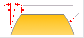

Extrude command bar (ordered)
The Extrude command bar in the ordered environment guides you through the main steps and step options, which change with each step and your selections:
- Add/Cut
-
Adds or removes material from the model.
-
Automatic—Adds or removes material from the model based on material detection.
-
Add—Adds material to the model.
-
Cut—Removes material from the model.
-
Add Body—Adds a new body to the model.
-
- Main Steps
-
- Sketch Step
-
Specifies whether you construct the feature by drawing a new profile on a reference plane or by using an existing sketch. To construct the feature by drawing a new profile, on the Create-From Options list, select a reference plane option. To construct the feature using an existing sketch or region, select the Select From Sketch option.
If you choose the Select from Sketch option, you can click a sketch in the graphics window or from the list of sketches.
- Draw Profile Step
-
Edits the profile for an existing feature. A profile is a 2D curve that defines the shape and location of the feature.
- Side Step
-
Defines the side of the sketch to which material should be added or from which material should be removed to construct the feature. The side step is not required when the sketch is closed.
- Extent Step
-
Defines the direction and depth of the feature or the distance to extend the sketch to construct the feature. The extent direction options are one direction only, two directions symmetrically, or two directions non-symmetrically. The extent depth options are: Through All, Through Next, From/To Extent, and Finite Extent.
- Treatment Step
-
Defines the draft and crowning options.
- Finish/Cancel
-
This button changes function as you move through the feature construction process. The Finish button constructs the feature using input provided in the other steps. The Cancel button discards any input and exits the command.
- Select Sketch Step Options
-
- Internal Face Loops
-
Specifies to include or exclude the internal loops of selected faces.
- Include Internal Loops
-
Includes the internal loops of selected faces.
- Exclude Internal Loops
-
Excludes the internal loops of selected faces.
- Use Only Internal Loops
-
Uses only the internal loops of selected faces.
- Select
-
Sets the method of defining the feature.
-
Single—Select one or more individual sketch elements.
-
Chain—Select an endpoint-connected set of sketch elements by selecting one of the elements in the chain.
-
Face—Select a planar face or sketch region on the model.
-
- Accept
-
Accepts the selection. You can also right-click to accept the selection.
- Deselect
-
Clears the selection.
- Extent Step Options
-
- One-Sided Extent
-
Specifies that the feature extent is to be applied in one direction only.
- Non-Symmetric Extent
-
Specifies that the feature extent is to be applied non-symmetrically about the sketch plane. When you set the Non-Symmetric Extent option, Direction 1 and Direction 2 options are added to the command bar, so you can specify the extent options for each direction. For example, you can specify a Through All extent for Direction 1, and type a finite extent value of 20 millimeters for Direction 2.
- Symmetric Extent
-
Specifies that the feature extent is to be applied symmetrically about the sketch plane.
- Direction 1
-
Sets the extent options for Direction 1.
- Direction 2
-
Sets the extent options for Direction 2.
- Through All
-
Sets the feature extent so that the sketch is extruded through all faces of the part, starting at the sketch plane. You can extrude the sketch to either side of the sketch plane, or to both sides.
- Through Next
-
Sets the feature extent so that the sketch is extruded through only the next closed intersection with the part on the selected side. You can extrude the sketch to either side of the sketch plane, or to both sides.
- From/To Extent
-
Sets the feature extent so that the sketch is projected from the sketch plane to another specified surface. The From Extent is automatically set to the sketch plane. The To Surface can be any valid surface on the model.
- To Surface
-
Sets the face to extend the feature to when the From/To Extent option is set.
Note:If the region is selected first, the From Extent surface can be redefined by dragging the extrude handle origin to another surface or plane. Click the extrude handle. Select the To Surface or plane. Right-click extrudes to the profile plane. A PMI dimension is automatically added for the extent length.
- Finite Extent
-
Sets the feature extent so that the sketch is projected a finite distance to either side of the sketch plane, or symmetrically to both sides of the sketch plane. Type the distance into the Distance box on the command bar.
- Keypoints
-
Sets the type of keypoint you can select to define a feature extent. You can define the feature extent using a keypoint on other existing geometry. The available keypoint options are specific to the command and workflow you use.

Selects any keypoint.

Selects an end point.

Selects a midpoint.

Selects the center point of a circle or arc.

Selects a tangency point on an analytic curved face such as a cylinder, sphere, torus, or cone.

Selects a silhouette point.

Selects an edit point on a curve.
- Distance
-
Specifies the distance to extend the feature when the Finite Extent option is set.
- Offset
-
Specifies the distance to offset the feature extent when the From/To extent option is set. For example, you can select a face as the From element and then specify that the feature extent is offset 10 millimeters.
- Step
-
Sets the distance value to increase or decrease in set increments when you move the cursor. For example, typing a step value of 10 millimeters and moving the cursor away from the sketch plane increments the distance from 10 millimeters to 20 millimeters, then to 30 millimeters and 40 millimeters.
- Treatment Step Options
-
Lists the treatment options. You can specify No Treatment, Draft, or Crown.
- Treatment Options
-
Displays the Treatment Options dialog box.
- No Treatment
-
Specifies that you do not want draft or crowning applied to the feature.
- Draft
-
Displays the draft options on the command bar so you can define the draft options you want.
- Crown
-
Opens a panel for you to define and apply the crown parameters to the feature.

- Crown Parameters
-
Displays the Crown Parameters dialog box.
- Angle 1
-
Sets the draft angle for the first extent direction.
- Flip 1
-
Flips the draft angle direction for the first extent direction. To see how the draft is applied, specify the draft angle you want, then move the cursor in the graphic window. If the draft angle is applied in the correct direction, click to construct the feature. If the draft angle is applied in the wrong direction, click the Treatment Step button, and then click the Flip button for the draft angle direction you want to change, then click to construct the feature.
- Angle 2
-
Sets the draft angle for the second extent direction. This option is available only when you have specified a symmetric extent.
- Flip 2
-
Flips the draft angle direction for the second extent direction. This option is available only when you have specified a symmetric extent.
- Body Selection Step Options
-
If multiple bodies exist in the file, lists the options for cutting bodies within the model. You can specify Cut Active or Select Cut Bodies. This option is active if the Add/Cut option is set to Automatic or Cut, but is inactive if the option is set to Add or Add Body.
- Cut Active
-
Cuts only the active body.
- Select Cut Bodies
-
Selects the bodies that are to be cut by the feature.
How do I
Construct a protrusion or cutout (ordered)Define the extent of an extruded feature
Construct a base feature
Construct a cutout (ordered)
Construct a hole
Construct a hole (ordered)
Construct a hole on a cylinder
Construct an extrusion: base feature
Construct an extrusion or cutout: subsequent features
Construct a protrusion or cutout: model face
Construct a Normal Protrusion
Construct a Normal Cutout (Part Environment)
Finish the Feature
Examples: Constructing Protrusions With the Finite Option
Examples: Constructing Protrusions With the Through All Option
Examples: Constructing Protrusions With the Through Next Option
Examples: Constructing Cutouts With the Through All Option
Examples: Constructing Cutouts With the Through Next Option
Examples: Constructing Cutouts With the Finite Option
Learn more
Part modeling workflow overviewPart modeling: Tips for getting started
Look up more details
Extrude command (synchronous)Extrude command bar (synchronous)
Extrude command (ordered)
Cut command
Cut command bar
Demo: Create protrusion or cutout using keypoint
Normal Protrusion command
Normal Protrusion command bar
Normal Cutout command (Part environment)
Normal Cutout command bar (Part environment)